About Me
Hey there, I'm Gabi! I'm a UX designer planning to graduate with a B.A. in Computer Science at UC Berkeley in December 2015. In between problem sets & CS projects, I dedicate the rest of my time to being an officer of Innovative Design, a design service club at Cal. During my time at Innovative Design, I've taught a class of Berkeley students the fundamentals of Photoshop & Illustrator, led a few teams of graphic designers, and, most importantly, learned that design doesn't have to just be my hobby; it can be my career, too!

